screenshot_0 · full
[1920, 922] → [1920, 922] · 保留像素 100.0% · 场景 0
原图与选区

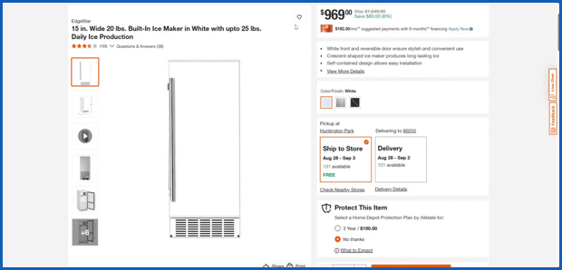
算法输出预览

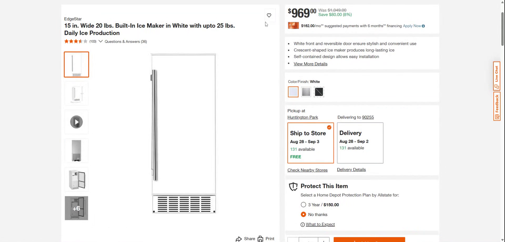
坐标：[0, 0, 1920, 922] · 原因：first_screenshot
算法版本：experimental_theme_aware_per_step_v2。仅用于预览，生成流程未修改。
返回任务总览 · 查看全部步骤拼图 · 查看算法判断 JSON
左侧为原图预览和选区（绿色：裁剪；蓝色：保留整图），右侧为此算法的输出预览；实验版尚未用于生成。点击图片查看原尺寸；预览自动缩放。像素减少比例不等于 token 减少比例。
[1920, 922] → [1920, 922] · 保留像素 100.0% · 场景 0
原图与选区

算法输出预览

坐标：[0, 0, 1920, 922] · 原因：first_screenshot
[1920, 922] → [582, 864] · 保留像素 28.4% · 场景 0
原图与选区
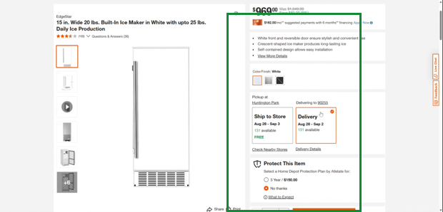
算法输出预览
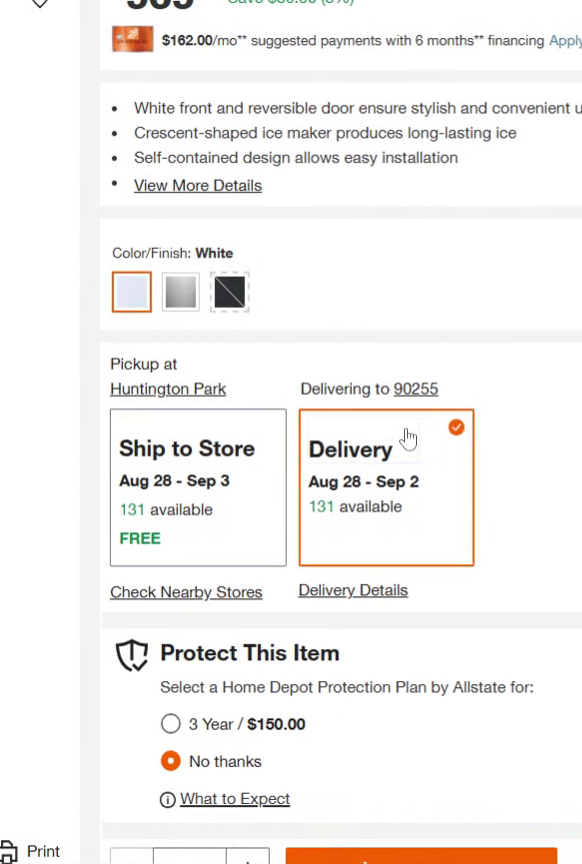
坐标：[983, 58, 1565, 922] · 原因：localized_change
[1920, 922] → [1161, 782] · 保留像素 51.3% · 场景 0
原图与选区
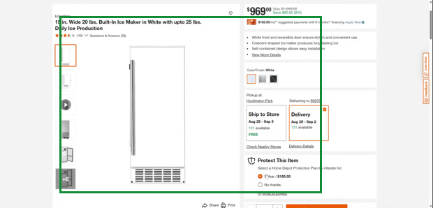
算法输出预览
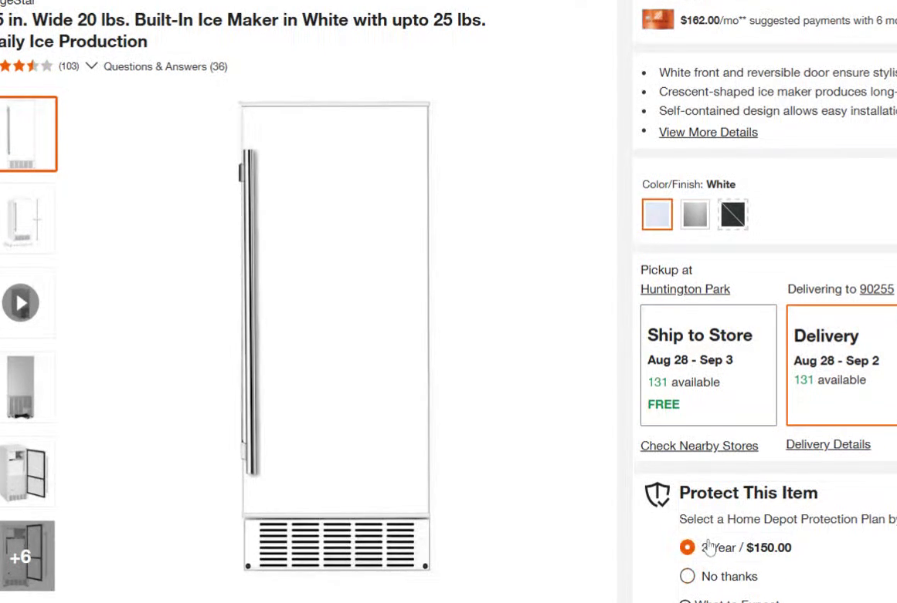
坐标：[264, 72, 1425, 854] · 原因：localized_change
[1920, 922] → [1920, 922] · 保留像素 100.0% · 场景 0
原图与选区
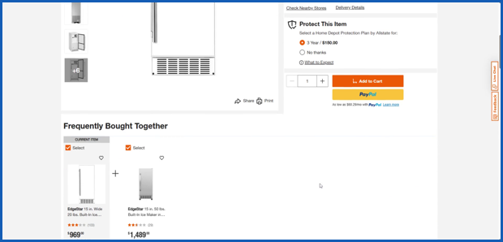
算法输出预览
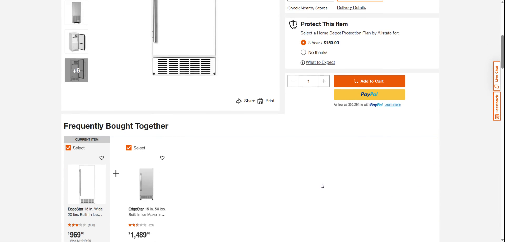
坐标：[0, 0, 1920, 922] · 原因：changes_spread_keep_full
[1920, 922] → [691, 508] · 保留像素 19.8% · 场景 0
原图与选区
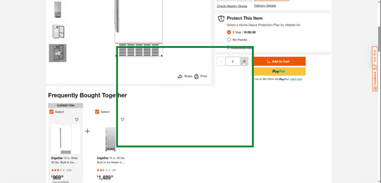
算法输出预览
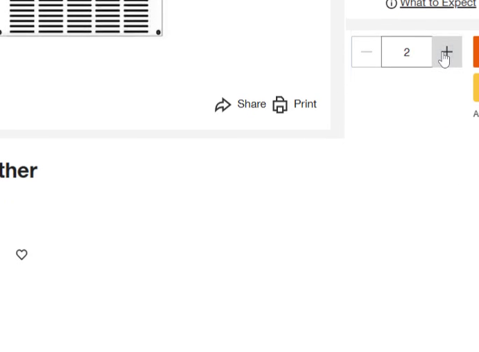
坐标：[586, 234, 1277, 742] · 原因：localized_change
[1920, 922] → [486, 171] · 保留像素 4.7% · 场景 0
坐标：[1068, 261, 1554, 432] · 原因：localized_change
[1920, 922] → [411, 153] · 保留像素 3.6% · 场景 0
原图与选区
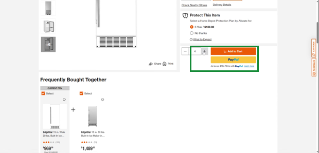
坐标：[1144, 278, 1555, 431] · 原因：localized_change
[1920, 922] → [241, 150] · 保留像素 2.0% · 场景 0
原图与选区
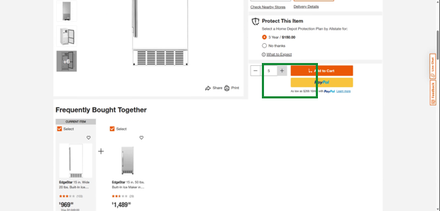
算法输出预览
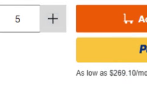
坐标：[1144, 278, 1385, 428] · 原因：localized_change